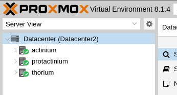
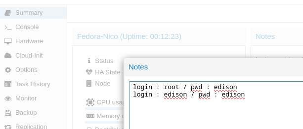

Utilisation de Proxmox

Accès à un cluster
Un cluster dans Proxmox est un regroupement artificiel de serveurs qui permet la gestion centralisée de ces serveurs et la mise en place éventuelle d'un système de haute disponibilité. Il se compose de noeuds, qui sont des serveurs individuels au sein du cluster. La haute disponibilité (HA) garantit un service continu aux utilisateurs même en cas de défaillance matérielle. Un cluster dans Proxmox permet des fonctionnalités telles que la migration directe des machines virtuelles, garantissant une interruption minimale du service.

Sur la capture on peut voir le cluster/datacenter est composé de 3 serveurs/noeuds
Accès au cluster :
https://193.49.248.71:10023
ou https://192.168.221.253:10023 depuis l'intérieur du lycée)login : root
password : E*2023
realm : Linux PAM
Accès à une VM sous Proxmox
Créer à une VM sous Proxmox
Attention à ne pas dépasser les valeurs max :
CPU
RAM
* DD (si disponible utiliser l'espace 'tank' (plus grand espace en RAIDZ)
!!! Compléter les "notes" dans vos VM pour que tout le monde y ait accès. !!! 
Installation par réseau
Exemple : installation de Debian
Préparation installation par ISO
- soit : uploader l'ISO
- soit : télécharger depuis un lien les ISO sont stockées dans le disque 'local' des serveurs/noeuds
Intallation par ISO
Exemple : installation de Fedora